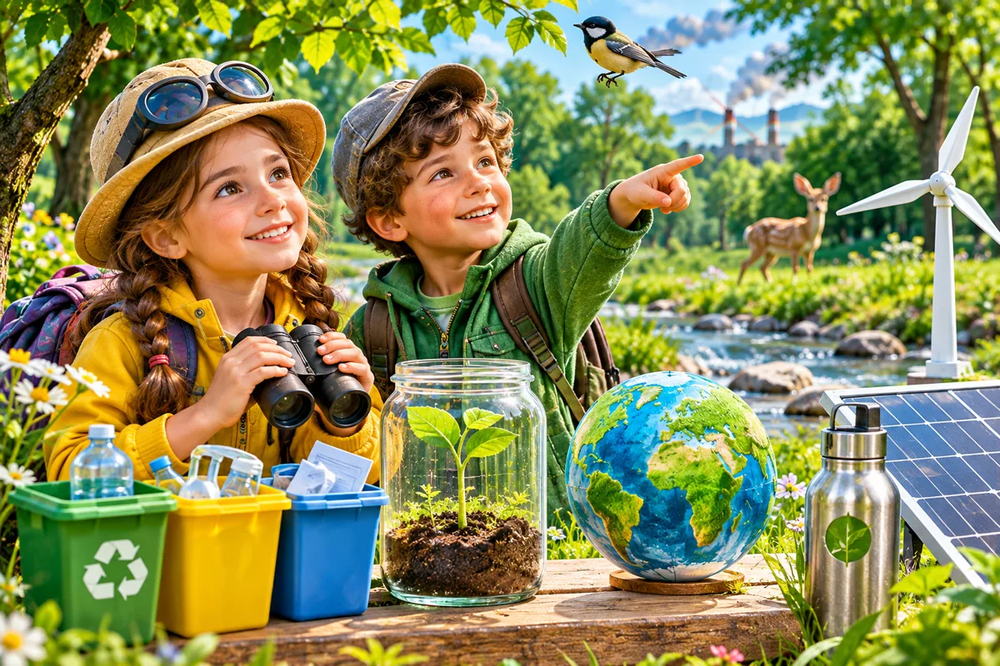

Перевіряємо власні відкриття
Діагностична робота
Корисні копалини, ґрунт, дослідження та відповідальне ставлення до природи.

Виконано завдань: 0 із 7
1. Пригадайте природні матеріали 🪨
Оберіть, які матеріали є корисними копалинами.
2. Що входить до складу ґрунту? 🌱
Оберіть усі правильні складники.
3. З'єднайте поняття та пояснення 🧩
Натисніть поняття, потім відповідне пояснення. Працює і на смартфоні.
4. Віртуальний дослід: як проходить вода? 💧
Виберіть матеріал, змініть кількість води та запустіть дослід.

Оберіть умови досліду.
5. Допомагає чи шкодить природі? ♻️
Розподіліть дії у дві групи.
6. Мініпроєкт «Мій добрий вплив» 💡
Запишіть три реальні дії, які допоможуть зберегти довкілля.
7. Перевірте себе 🏆
Мої відкриття 🌻
Перегляньте результати, збережіть підсумок і відкрийте велику ілюстровану мапу уроку.
🗺️ Мапа уроку